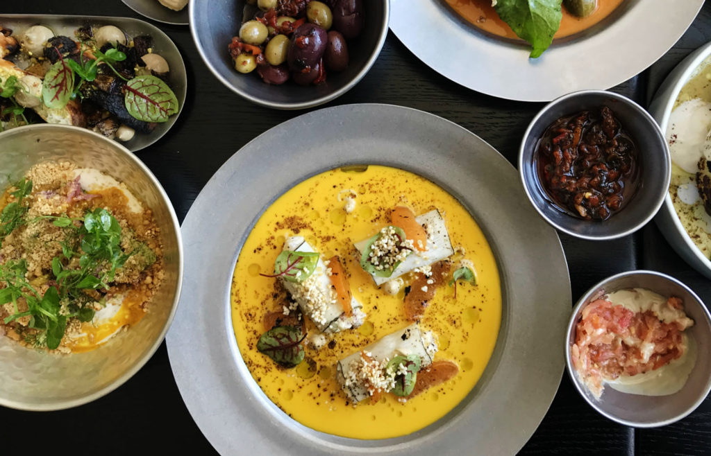

This dashboard is an example focusing on sales, margins, volumes and conversions. There are two more views specifically focusing on the performance of the products and Sales team.
Usually, the first page of a dashboard contains the most important KPI’s. Each page shows the most important trends and figures.

Character dialogues for all 8 movies in the Harry Potter franchise, including additional information about each movie, its chapters, characters, places, and spells. we can see that Harry Potter has 8 chapters with a budget of $1.35M and a generated revenue of $7.77M.
The NYPD 2021 database show that most perpetrator are BLACK between the 25-44 age group. There was a significant increase in crime during the month of July 2021

Trip records from all green taxis in NYC in from 2017 to 2020. Records include fields capturing pick-up and drop-off dates/times, pick-up and drop-off locations, trip distances, itemized fares, rate types, payment types, and driver-reported passenger counts.
Customer satisfaction scores from 120,000+ airline passengers, including additional information about each passenger, their flight, and type of travel, as well as ther evaluation of different factors like cleanliness, comfort, service, and overall experience.
Historical data on the modern Olympic Games, from Athens 1896 to Rio 2016. Each row corresponds to an individual athlete competing in an individual event, including the athlete's name, sex, age, height, weight, country, and medal, and the event's name, sport, games, year, and city..

Restaurant ratings in Mexico by real consumers from 2012, including additional information about each restaurant and their cuisines, and each consumer and their preferences.
Data for 375,000+ Kickstarter projects from 2009-2017, including project name, category, launch date, deadline, goal, amount pledged, number of backers, state, and country.
The data from this project was from an SQL Server, Data was cleaned and visualized with the use of Power BI.

The data from this project was from Data/Business Intelligence Analyst assessment test. It was cleaned and visualized with the use of Microsoft Power BI.